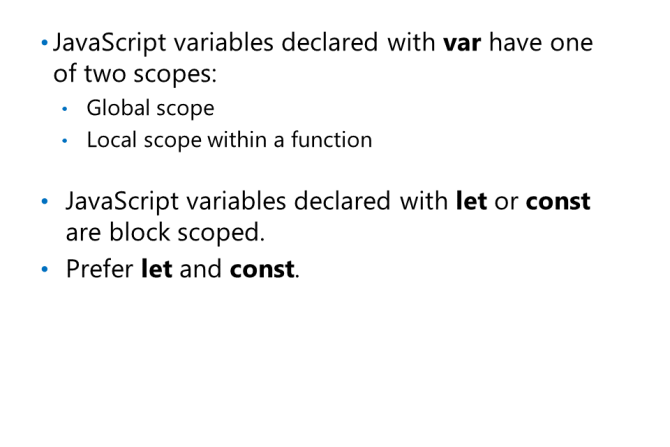
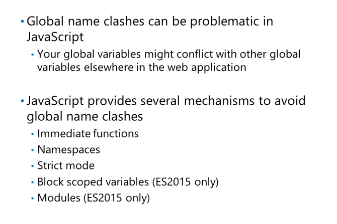
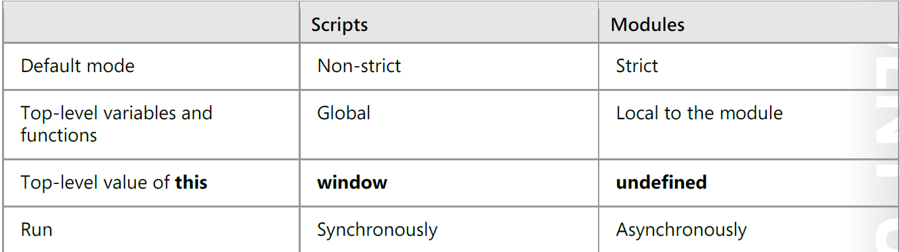
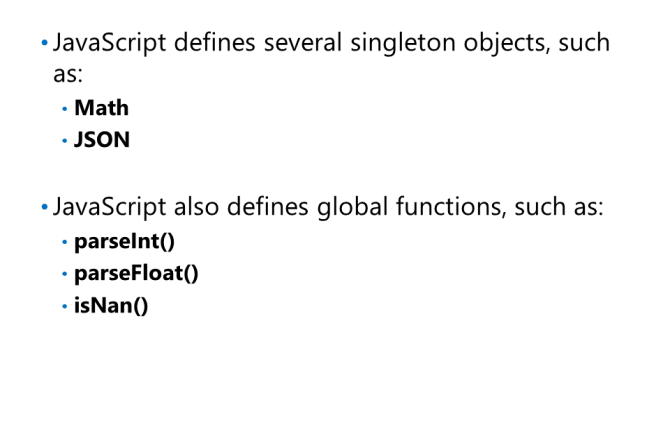

Określanie i podnoszenie zakresu
var
w JavaScript ma jeden z dwóch zakresów:
-
Zmienna ma zasięg globalny, jeśli została zdefiniowana
poza funkcją.
-
Zmienna ma zasięg funkcji, jeśli jest zdefiniowany w funkcji.
Zmienne o zasięgu blokowym są definiowane za pomocą słów kluczowych let lub const. i są widoczne w podblokach
Czyli var tworzy zmienną widoczną globalnie, też poza blokami i powinno się jej używać tylko gdy jest potrzebna. Zaleca się stosowanie let i const.
Zarządzanie globalną przestrzenią nazw

JavaScript udostępnia kilka mechanizmów, które pomagają unikać globalnych konfliktów nazw, w tym:
• Natychmiastowe wywołanie funkcji - funkcje anonimowe function ()
• Przestrzenie nazw
• Strict mode
ECMA-262 6th edition wprowadziła jeszcze dwie funkcje, które mogą pomóc w zarządzaniu globalnym
przestrzenią nazw;
• Zmienne o zasięgu blokowym - omówione w poprzedniej lekcji.
• Moduł - omówiony w następnym temacie.
Przestrzenie nazw
dostęp do elementów przestrzeni nazw:
MyNamespace.myFunction1(someParameterValues);
MyNamespace.message = "Goodbye all";
Strict Mode
tworząc zmienną bez podania var/const/let tworzy się domyślnie var czyli zmienna globalna
Aby uniknąć przypadkowego zadeklarowania zmiennych globalnych poprzez pominięcie słowa kluczowego var, możesz użyć strict mode:
function someFunction() {
"use strict";
// Other statements.
}
Moduły
Moduły są samodzielne i implementują
odrębna funkcjonalność pozwalająca na
w razie potrzeby zaktualizowanie, dodanie lub usunięcie, bez
zakłócania całego systemu. Łamanie kodu
w moduły zwiększa łatwość konserwacji i
możliwość ponownego użycia kodu.
Moduły są zapisywane w plikach. Jeden moduł
na plik i jeden plik na moduł.
Aby załadować plik JavaScript jako moduł, musimy dodać tag script z atrybutem type, którego wartość to
module.
Moduły mają kilka kluczowych różnic w stosunku do zwykłych plików skryptów

Ujawnienie interfejsu API z modułu odbywa się jawnie przy użyciu deklaracji eksport, natomiast
wykorzystanie interfejsów API modułu zostanie wykonane za pomocą deklaracji import.
dwa rodzaje eksportu:
-
Nazwany eksport
Moduł może eksportować wiele funkcji, poprzedzając je deklaracją eksportową.
Moduł można również zaimportować jako całość, a jego nazwane eksporty zostaną skierowane przy użyciu
property notation.
//------ main.js ------
import * as calc from 'calc.js';
console.log(calc.sum(4,4)); // 8
console.log(calc.multiply(5,2)); // 10
-
Domyślny eksport, Moduł może zdefiniować pojedynczy domyślny eksport, główną eksportowaną wartość.
Obiekty singletonowe i funkcje globalne w JavaScript

Wzór singletonu opisuje, jak to zapewnić
że istnieje tylko jedna instancja klasy
Typowe zastosowania wzoru singletonu
może obejmować następujące klasy:
Database driver manager class
odpowiedzialny za wybór bazy danych
sterownik do użycia w celu otwarcia połączenia z
Baza danych.
screen manager class za którą odpowiada
organizowanie układu okien w jednym
ekranie.
Klasa matematyczna zapewniająca funkcje algebraiczne i trygonometryczne, takie jak sin, cos i tan
Obiekt Math udostępnia funkcje matematyczne i stałe. Dostęp do tych funkcji i
stałe wartości bezpośrednio przez obiekt Math; nie tworzysz najpierw obiektu matematycznego. The
poniższy przykład pokazuje, jak uzyskać dostęp do niektórych członków obiektu Math:
let radius = 100 * Math.random();
let circumference = 2 * Math.PI * radius;
let area = Math.PI * Math.pow(radius, 2);
Obiekt JSON zapewnia metody konwertowania wartości na JavaScript Object Notation (JSON)
ciągi oraz do konwersji ciągów JSON z powrotem na wartości. Poniższy przykład pokazuje, jak korzystać z
Obiekt JSON:
let anObject;
...
let anObjectAsJsonString = JSON.stringify(anObject);
let anObjectAgain = JSON.parse(anObjectAsJsonString);
JavaScript zapewnia również zestaw globalnych wspólnych funkcji i właściwości, których można używać ze wszystkimi
wbudowane obiekty JavaScript, takie jak parseInt (), parseFloat () i isNan (). Poniższy przykład pokazuje
jak korzystać z tych globalnych funkcji:
let ageEnteredByUser;
let heightEnteredByUser;
…
let age = parseInt(ageEnteredByUser);
let height = parseFloat(heightEnteredByUser);
if (isNan(age) || isNan(height))
alert("Invalid input");